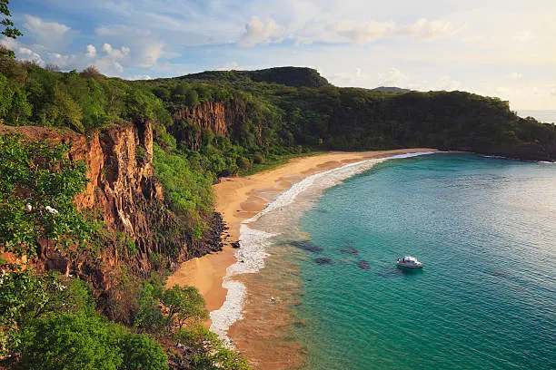
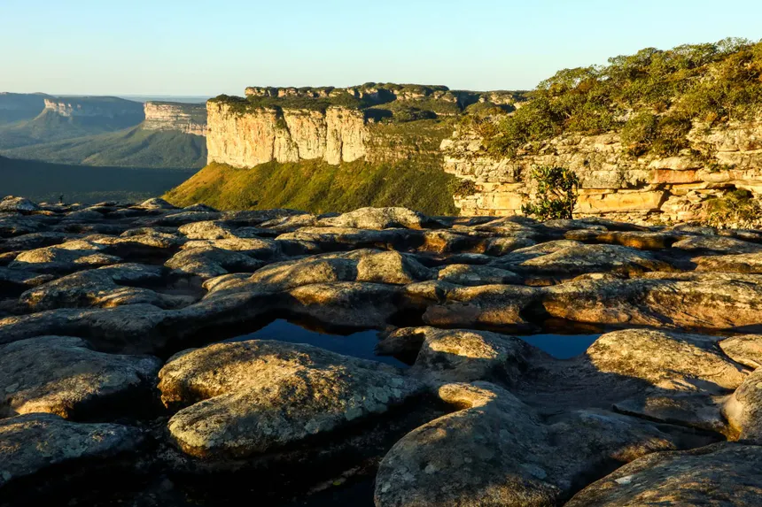
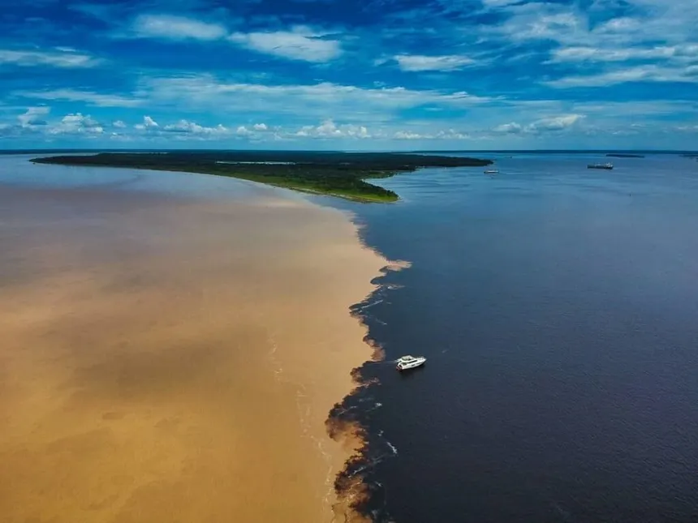

Destinos Turisticos
O Brasil oferece destinos para todos os gostos: litoral, natureza, historia e cultura. Confira alguns dos lugares mais visitados e amados do pais.
Fernando de Noronha - PE
Arquipelago localizado a 545 km do Recife, Fernando de Noronha e considerado um dos melhores destinos de mergulho do mundo. Suas aguas cristalinas e a rica vida marinha fazem do lugar um patrimônio natural da UNESCO.

Chapada Diamantina - BA
Localizada no interior da Bahia, a Chapada Diamantina e um destino de ecoturismo com cachoeiras, grutas, trilhas e morros com vistas deslumbrantes. O Poco Encantado e o Poco Azul sao atrações imperdíveis.

Manaus e o Encontro das Aguas - AM
Manaus e o ponto de partida para exploracao da Amazonia. O Encontro das Aguas, onde o Rio Negro e o Rio Solimoes correm lado a lado sem se misturar, e um dos fenomenos naturais mais impressionantes do Brasil.
